La communauté Minecraft


Sommaire :
Présentation de la page
La communauté Minecraft est riche et passionnée ! Cette page lui est dédiée, elle vous permettra de découvrir rapidement les créateurs, les records, et les grandes histoires qui font vivre le jeu, que ce soit en France ou dans le reste du monde. Entre Youtubeurs, rivalités légendaires et amitiés mémorables, plongez au cœur de la communauté qui fait battre Minecraft.
Youtubeurs actuels
Les Youtubeurs actuels français
Fuze III, avec sa chaîne secondaire Fiouze, est un de nos youtubeurs Minecraft préférés, il propose des contenus variés, notamment sur son serveur Paladium ou sur un serveur affilié, Nations-Glory. Il a également un gameplay moddé,
Minecraft Moddé et teste des maps. Il est actif depuis le 21 déc. 2011, soit depuis l'année de la sortie du jeu. Son assisuité quand à la sortie des vidéos, et son originalité relative de contenu lui permettent de cumuler aujourd'hui 3,73 millions d'abonnés sur ces deux chaînes.
Malgré ses cheveux qui laisse à désirer, et ses placements de produits parfois douteux, c'est un super youtubeur qui donne envie de jouer au jeu, et de tester de nouvelles choses dessus. Après on va pas vous mentir, il fait également d'autre jeux, mais Minecraft reste une grosse partie de son contenu.
Fuze III a également fait des musiques sur le thème de Minecraft, mais on vous déconseille de les écouter mdr ! 😂
| 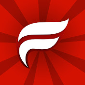 | 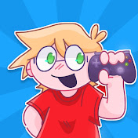 |

Ninjaxx est notre deuxième youtubeur Minecraft préféré. Il propose en même temps des séries et des vidéos occasionnelles à thèmes. Sa plus grande série récente est From The Fog, avec des mods horreur. Très bien scénarisée, elle nous rappelle sa période SCP. Il aime beaucoup les "Minecraft mais", autant pour le priivilégier, avec des items cheat aléatoires, que pour lui compliquer la tâche, comme lorsqu'il a du finir le jeu sans rien craft ni miner ! Sa voix est super agréable, il est super drôle, surtout quand il rage ou qu'il flippe. Son plus gros kiff, c'est le WTF ! Tant que c'est déjanté et sans logique, vous pouvez être sur que vous rigolerez avec lui. Il est actif depuis le 25 août 2014 et a 1,81 M d'abos.
| 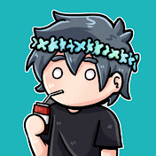 | 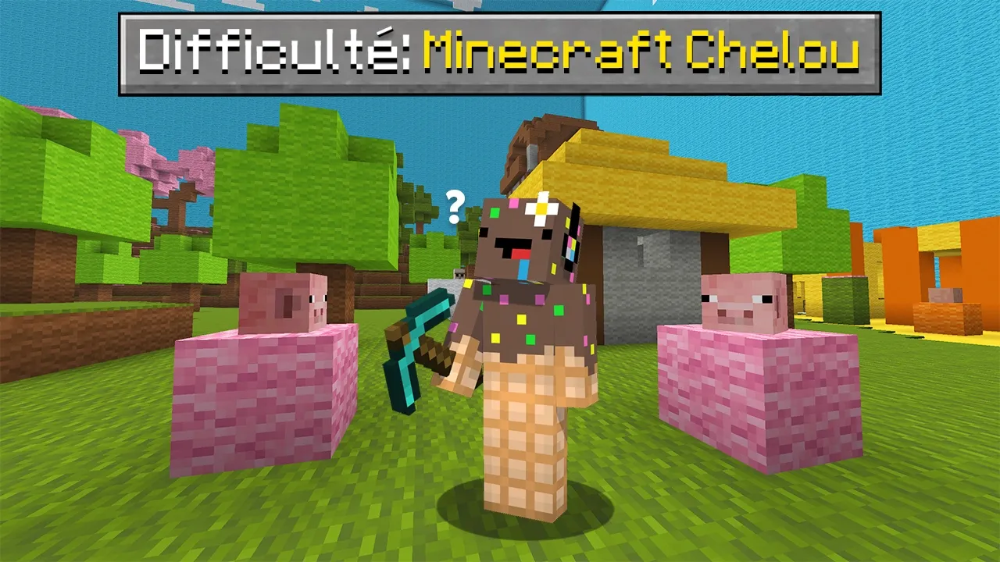 |
Laylo est un youtubeur que j'aime bien regarder, je l'ai découvert relativement récemment, mais il est actif depuis le 27 août 2016. Ses vidéos sont axés sur son serveur public, sa survie Hardcore et son SMP. Il est agréable et ses vidéos sont bien montées. Son serveur est un Oneblock, il vous le présente très bien ici. Il fait aussi du contenu avec ses amis, des "Minecraft mais" ou autre. Il a 557k abonnés.
| 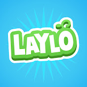 | 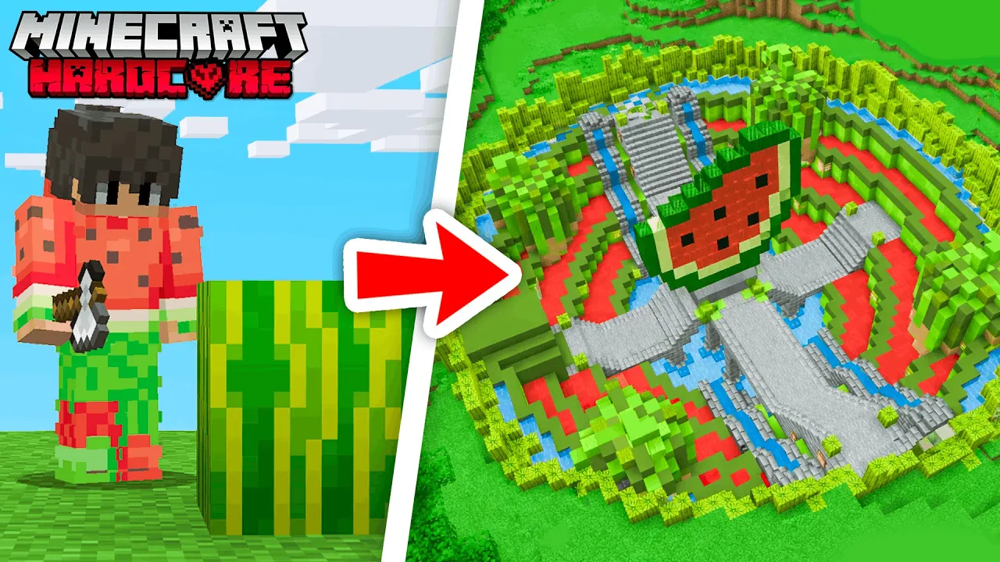 |
Les Youtubeurs actuels internationaux
Alan Becker est mon youtubeur préféré. C'est un animateur, il crée de l'animation frame par frame, avec son équipe. Effectivement, il ne joue pas à Minecraft dans ses vidéos, mais il anime ses personnages dans l'univers de Minecraft, avec sa série Animations vs Minecraft. Il est actif depuis le 24 juillet 2006, bien avant la sortie de Minecraft. Il faisait déjà de l'animation avant, et Minecraft est devenu une source d'inspiration supllémentaire. Il cumule 32,5 M d'abonnés. Comme il se présente lui même : "Avec mon équipe, je crée des animations mettant en scène des stickmans évoluant sur un écran d'ordinateur. Sans dialogues, mais avec beaucoup d'humour et d'émotion. Bon visionnage !". Sa série AvM est celle qui lui permet d'être sur ce site, mais n'hésitez pas à regarder ses autres séries.
| 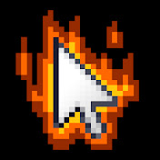 | 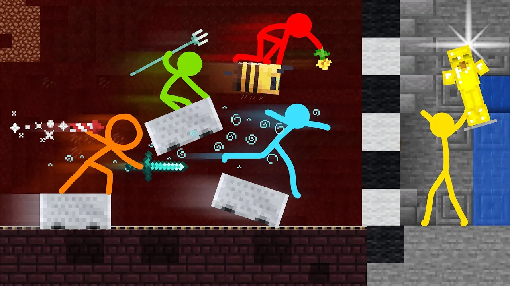 |
CheapPickle est un youtubeur américain que j'aime beaucoup suivre.
Il est surtout connu pour ses vidéos Minecraft hilarantes et pleines de défis, où il fait des mini-jeux et des challenges avec ses amis.
Il a créé sa chaîne YouTube le 25 juillet 2023 et y a rapidement explosé en popularité, dépassant 5,5 millions d’abonnés grâce à son style fun et sa voix reconnaissable qui plaisent à une vaste communauté.
Avec un montage assez qualitatif et un contenu qui ne cesse de se renouveler, ses vidéos sont extrêmement agréables à regarder.
Autour de lui gravite le Goofy Gang, un collectif de YouTubeurs formés par ses amis : Tinymacdude, Ali, Wallibear, Estabrok et Creebus.
Ensemble, ils font des vidéos Minecraft collaboratives pleines d’humour et de folie, de l'horreur, ou encore du multigaming.
| 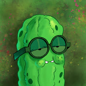 | 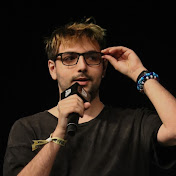 | 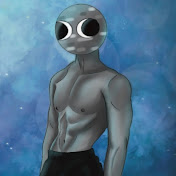 | 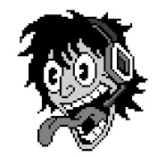 |
Dream est un youtubeur que je n'ai pas beaucoup suivi, malgré la fame autour de lui. Bref, c'est l'un des créateurs les plus emblématiques de la communauté Minecraft, surtout connu pour ses challenges et speedruns impressionnants, mais aussi pour ses célèbres séries comme Minecraft Manhunt, où il tente de terminer le jeu tout en étant poursuivi par ses amis. Il a créé sa chaîne le 8 février 2014 et a rapidement gagné en popularité, atteignant 33,8 M d'abonnés aujourd'hui. Dream s’est aussi fait connaître par ses vidéos collaboratives avec des YouTubers comme GeorgeNotFound, et Sapnap formant ainsi la fameuse Dream Team.
| 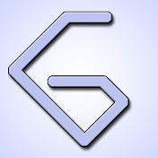 | 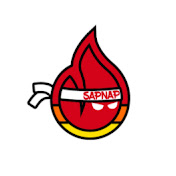 |
Mumbo Jumbo est un youtubeur que je n'ai pas beaucoup suivi non plus. Mon frère était un grand fan.
Bref, c'est l'un des créateurs les plus emblématiques de la communauté redstone Minecraft. Il se présente ainsi sur Youtube :
"Je m'appelle Oli, alias Mumbo Jumbo, et je crée des vidéos sur le célèbre jeu « Minecraft ».
Je me concentre principalement sur les aspects techniques du jeu, en proposant des tutoriels sur différents éléments de redstone pour vous aider à progresser et,
je l'espère, vous donner de quoi impressionner vos amis.
Je propose également une longue série de Let's Play en mode Survie Vanilla sur le célèbre serveur Hermitcraft."
Il a créé sa chaîne le 31 mars 2012 et a 9,76 M d'abonnés aujourd'hui.
| 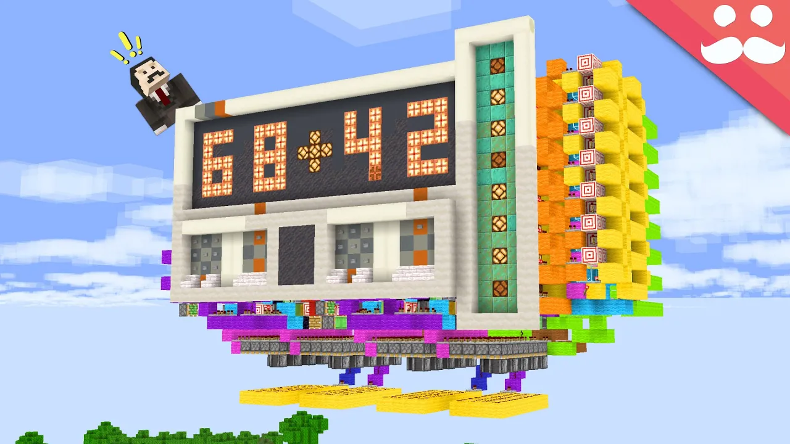 |
Youtubeurs passés
Les Youtubeurs passés français
Furious Jumper était mon youtubeur préféré d'enfance. Lorsqu'il faisait encore du contenu sérieux, des vidéos Minecraft moddés, ou autre, c'était un youtubeur agréable à regarder, amusant et instructif sur Minecraft (avec ses Minecraft News). Aujourd'hui, il ne fait plus que du contenu brainrots roblox, et des shorts enfantins. Il ne poste plus que pour les vues. Son passé forme un merveilleux souvenir pour moi, même s'il est entaché de ce que je vois aujourd'hui. Ses vidéos Minecraft sont toujours visibles, il faut checker ses playlists.
| 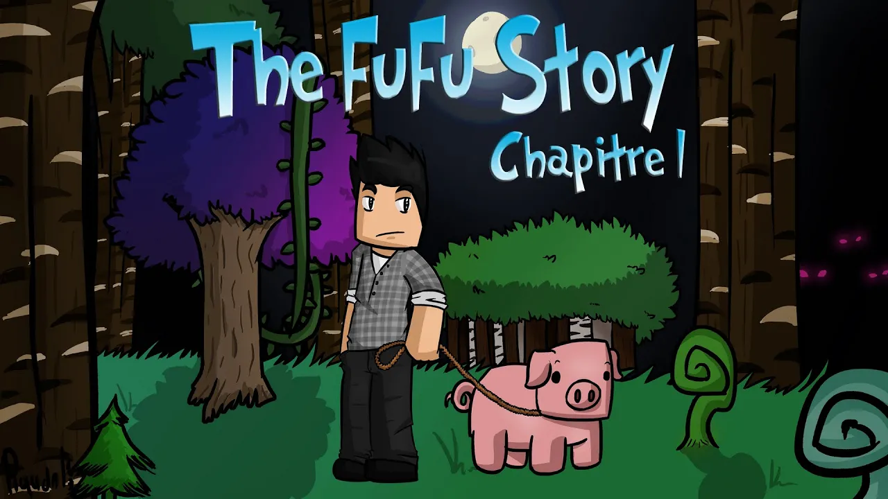 |
Oxilac est un youtubeur que je ne connais pas très bien. Je ne le connais que grâce à sa série Ice Cream Survival avec Furious Jumper. Malgré qu'il fasse toujours de vidéos Minecraft depuis le 23 juil. 2012, et qu'il a 1,01 M d'abonnés, j'ai décidé de le mettre dans les youtubeurs passés, puisqu'il ne cumule qu'environ 10k vues par vidéos aujourd'hui. Pour plus d'information à son propos, redirigez-vous vers la page du wiki youtube sur Oxilac.
| 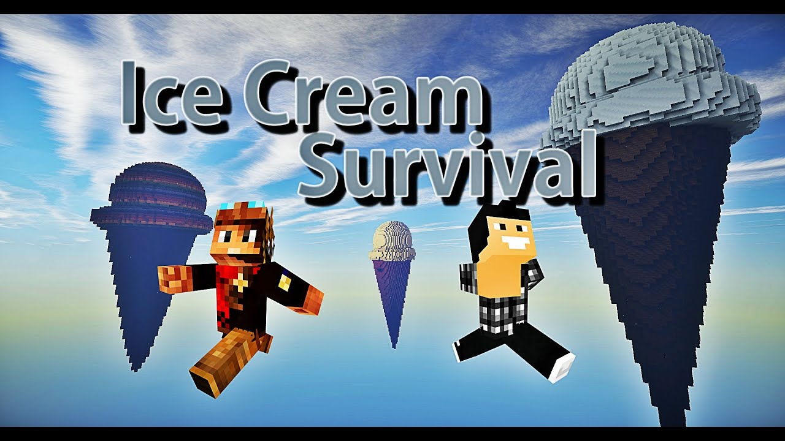 |
Magicknup a été un youtubeur que j'ai beaucoup suivi pendant les quelques mois où je l'ai connu. Il a arrêter de produire des vidéos il y a 2 ans, alors qu'il était actif depuis le 13 oct. 2014. Il faisait un peu comme tout les youtubeurs Minecraft, du gameplay moddés, des Minecraft mais,... il avait également une série hardcore. Je l'aimais bien, et j'ai trouvé dommage qu'il arrête les vidéos. N'hésitez pas à aller voir sa chaîne, si vous voulez vous amusez et voir des vidéos qualitatives et faites parce qu'il aimait jouer.
 |
Les Youtubeurs passés internationaux
Technoblade est une légende de Minecraft qui a eu droit a un hommage dans le film Minecraft. Il était très populaire pour ses skills en PvP et ses participations à des événements sur Hypixel ou sa présence sur le Dream SMP. Il avait révélé publiquement en août 2021 qu’il se battait contre un sarcome (type rare de cancer), et il en est décédé en juin 2022 à l’âge de 23 ans. Après sa mort, suite à une vidéo publiée sur son compte de manière posthume, il laisse comme héritage une phrase qu'il ne cessait de dire : "Technoblade Never Dies" ! 👑
| 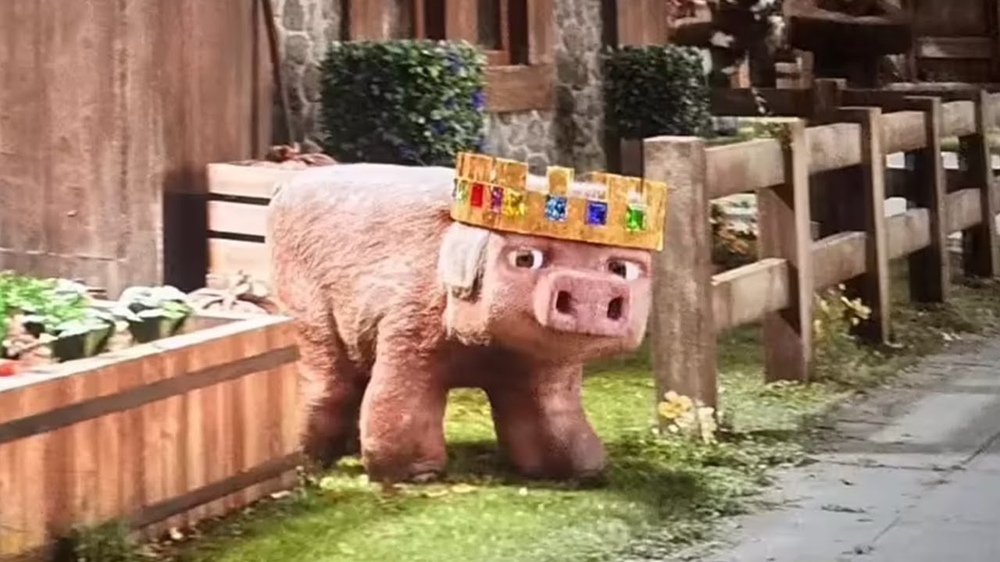 |
Sky Does Everything est un des YouTubers américains les plus connus de l’âge d’or de Minecraft, ayant créé sa chaîne en février 2011 et atteint 10,8 M d'abonnés aujourd'hui. Il est membre fondateur du collectif Team Crafted, rassemblant des figures majeures du YouTube Minecraft comme AntVenom, Deadlox et TrueMU. Le groupe marque l’âge d’or du contenu Minecraft sur la plateforme entre 2012 et 2014, façonnant les standards du let’s play humoristique. À partir de 2022, d’anciennes partenaires et collègues publient des témoignages l’accusant d’abus physiques, sexuels et psychologiques, entraînant la fin définitive de son activité publique. Sa chaîne principale, autrefois vendue sur un site d’échange, est aujourd’hui inactive.
Records du monde
Le record du monde de Speedrun
La communauté Minecraft n’arrête jamais de surprendre. Certains joueurs font des choses incroyables. Par exemple, lowk3y_ détient le record du monde de speedrun sur Java et a fini Minecraft en 6 minutes 50 secondes sur Java Edition. Sur Bedrock, c'est lol869 avec ses 13 minutes 13 secondes.

Les autres types de records du monde
Il existe d'autres types de records sur Minecraft. Par exemple, la durée de jeu la plus longue (Alexandre Jouniaux a tenu 38 heures et 1 minute de jeu non-stop sur Minecraft), le plus grand nombre de jeux différents/joueurs sur un seul serveur Minecraft (Hypixel),... Le joueur Sammyuri a construit une machine Redstone gigantesque dans Minecraft, c’est une intelligence artificielle fonctionnelle inspirée de ChatGPT faite entièrement avec de la Redstone.
Grandes rivalités
Technoblade vs Dream
La rivalité entre Technoblade et Dream est l’une des plus marquantes de la communauté Minecraft sur YouTube au début des années 2020. Elle s’est manifestée lors d’un duel très attendu en 2020, organisé par MrBeast, avec 100 000 dollars à la clé. Ce face-à-face opposait deux styles différents : Technoblade était réputé pour ses compétences en combat joueur contre joueur (PvP), tandis que Dream s’était imposé grâce à ses vidéos de speedrun et ses défis techniques innovants. Leur confrontation fut remportée par Technoblade. Leur communauté à chacun était également très investie dans ce duel, analysant après coup chaque actions des duelistes.
 |
 |
Dream vs Daquavis
La rivalité entre Dream et Daquavis s’inscrit dans la sphère compétitive du Minecraft PvP, notamment autour des formats de duels et de défis techniques. Dream est principalement reconnu pour ses performances en speedrun et ses vidéos scénarisées à haute intensité, tandis que Daquavis, 13,3M d'abonnés, s’est fait connaître pour son niveau élevé en PvP. Leur opposition a suscité l’intérêt des communautés respectives, qui débattaient de la supériorité entre stratégie, mécanique pure et gestion de la pression en duel. Ils s'opposent également lors d'un duel à 100 000 $, qui se prolongera à plusieurs défis, une série de skills challenges et un Manhunt.

Grandes amitiés
Fuze et Ninjaxx
La relation entre Fuze III et Ninjaxx est avant tout marquée par une amitié construite au fil des années au sein de la communauté Minecraft francophone. Au-delà des comparaisons entretenues par leurs communautés respectives, les deux créateurs ont partagé une proximité fondée sur des expériences communes, des collaborations ponctuelles et une compréhension mutuelle des enjeux du métier de vidéaste. Ayant évolué dans la même génération de YouTubeurs gaming, ils ont traversé ensemble les grandes étapes de l’essor de Minecraft sur YouTube en France. Leur relation illustre la solidarité qui peut exister entre créateurs confrontés aux mêmes défis de visibilité, de pression communautaire et d’évolution de contenu. Aujourd'hui, il est rare que quelqu'un connaisse l'un sans connaître l'autre.
Ninjaxx et Nino
La relation entre Ninjaxx et Nino repose avant tout sur une amitié forgée à travers leurs collaborations dans l’univers Minecraft francophone. En partageant des projets, des vidéos et des moments marquants en ligne, ils ont développé une complicité perceptible à l’écran, appréciée par leurs communautés respectives. Leur dynamique s’appuie sur un mélange d’humour, de défis en jeu et d’échanges spontanés qui renforcent l’authenticité de leur relation. Au fil des années, cette proximité a contribué à fidéliser leur audience, qui associe souvent leurs contenus à des souvenirs communs et à une ambiance conviviale. Aujourd’hui, même s’ils ne jouent plus régulièrement ensemble, leurs communautés continuent de réclamer avec enthousiasme de nouvelles collaborations entre Ninjaxx et Nino.
| 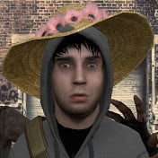 |
Le Goofy Gang
Le Goofy Gang est avant tout né d’une vraie amitié entre plusieurs YouTubers Minecraft, qui ont commencé par jouer ensemble et apparaître dans les vidéos les uns des autres avant de créer un collectif officiel. Chacun des membres apporte sa personnalité et son style au groupe, ce qui a donné lieu à des défis et mini‑jeux amusants et souvent improvisés entre amis devant leur audience. Leur dynamique est marquée par une ambiance de camaraderie et de joie de jouer ensemble, plutôt que par une simple collaboration professionnelle. Cette façon de jouer et de créer des contenus en équipe a rapidement séduit une large partie de la communauté Minecraft, qui voit le Goofy Gang comme un exemple de coopération et de fun collectif. Même si chaque membre peut parfois produire des vidéos individuellement, leur amitié et leur complicité restent au cœur de l’identité du groupe. Il publie leur parties Minecraft en groupe sur les chaînes principales de chacun et ont une chaîne commune pour le multigaming.
Le Goofy Gang :
| 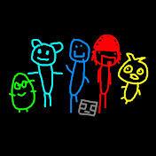 |
Sources :
Les villains dans la vraie vie
Le wiki sur le youtube Francophone
Le wiki sur SkyDoesMinecraft et la Team Crafted
Wikipédia
Youtube